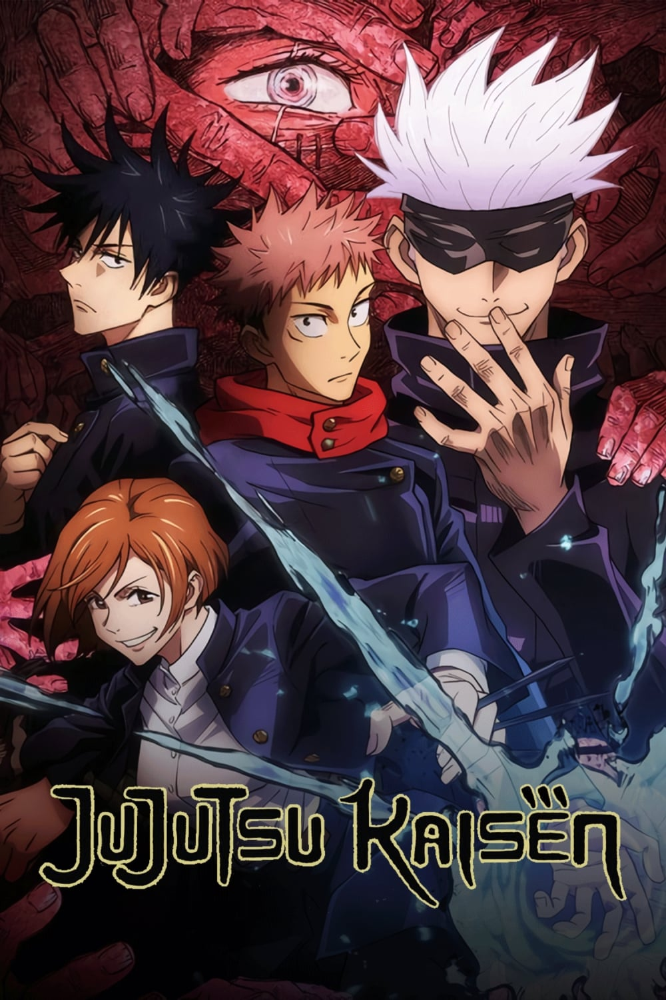
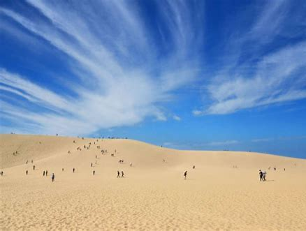

Tempat di mana Minnasan bisa menjelajahi keindahan, budaya, dan pesona Jepang secara menyeluruh, seolah-olah Minnasan sedang berada di sana. Nikmati pengalaman perjalanan virtual yang membawa Minnasan lebih dekat dengan Jepang, mulai dari tradisi, kuliner, hingga destinasi terbaiknya. Mari kita mulai petualangan bersama!"
|  |  |
|||
Jigoku Sensei Nube (Remake) |
Jujutsu Kaisen |
Naruto Shippuden |
One Piece's |
|
Akan segera tayang pada awal tahun 2025 nanti! |
Mendominasi di berbagai nominasi pada acara penghargaan Crunchyroll Anime Awards 2024 |
Walaupun kolaborasi antara Mobile Legends: Bang Bang (MLBB) dan Naruto masih bersifat bocoran, akan tetapi banyak fans yang menantikan kolaborasi tersebut |
akan hiatus karena alasan kesehatan penulisnya yang buruk |
|
| Selengkapnya | Selengkapnya | Selengkapnya | Selengkapnya |
Matsumoto: "Sebenarnya masih banyak kota yang terkenal, dan tak kalah keren lainnya dibanding dengan 4 kota dibawah ini. Tapi sepertinya keempat kota inilah yang memiliki daya magnet yang begitu mengagumkan~ ãŠé¡˜ã„ã ã‹ã‚‰ (Onegai da kara)!"

Tokyo merupakan ibukota sekaligus pusat bisnis negara Jepang. Dijuluki sebagai kota megapolitan terpadat didunia, terbukti dengan jumlah penduduknya yang selalu meningkat tiap tahunnya. Dari segi transportasi, Minnasan gak perlu khawatir di kota ini. Karena Tokyo memiliki jaringan kereta api perkotaan terbesar di dunia. Kereta di Tokyo dikenal bersih, efisien, dan tepat waktu. Namun, pada jam sibuk kereta bisa sangat penuh. Setidaknya terdapat 3,5 juta penumpang per harinya, sehingga menjadikan Stasiun Shinjuku di kota ini menjadi salah satu stasiun kereta tersibuk di dunia. Selain kereta masih banyak transportasi disana yang bisa Minnasan gunakan ya!
Matsumoto: "Siapa nih yang belum tau seputar fakta menarik tentang negeraku?"
Budaya Disiplin - dikutip dari kanal YouTube Doczon disebutkan budaya disiplin yang dianut oleh masyarakat Jepang berakar kuat dalam sistem nilai dan filosofi hidup mereka. Konsep disiplin, yang dalam bahasa Jepang dikenal dengan istilah "shitsuke," merupakan perilaku yang ditunjukkan orang dewasa terhadap anak-anak untuk membantu mereka tumbuh dengan menguasai perilaku yang diperlukan dalam menjalankan kehidupan sosial mereka. Kedisiplinan ini ditanamkan sejak dini dan dihayati oleh seluruh lapisan masyarakat, baik di tingkat bawah maupun di tingkat atas. Masyarakat Jepang sangat menghargai waktu dan memiliki etos kerja yang tinggi. Ketepatan waktu menjadi salah satu ukuran disiplin bagi mereka. Tidak hanya keterlambatan, bahkan datang terlalu cepat dari waktu yang ditentukan juga dianggap sebagai sesuatu yang tidak baik. Pada tahun 2019, seorang menteri kabinet Jepang bahkan harus meminta maaf secara terbuka karena keterlambatannya selama 3 menit dalam menghadiri rapat kerja di kabinet. Hal serupa terjadi pada tahun 2018, ketika sebuah kereta tiba di stasiun lebih cepat sekitar 25 detik, yang kemudian memicu kritikan publik dan memaksa pihak manajemen perusahaan kereta untuk meminta maaf. Disiplin yang kuat ini telah menjadi salah satu faktor kunci dalam kemajuan Jepang sebagai negara maju. Masyarakat yang disiplin dan memiliki rasa malu yang tinggi terhadap ketidakdisiplinan telah membentuk sumber daya manusia yang unggul dalam berbagai bidang, source: Suara Merdeka Banyumas.com
Sains dan Teknologi - seperti sudah diketahui bahwa teknologi Jepang sangat maju, bahkan sangat berpengaruh pada dunia. Dengan perkembangan teknologinya dari tahun ke tahun yang semakin canggih, Jepang merupakan salah satu negara yang memberikan contoh kemajuan teknologi bagi dunia. Jepang adalah pemimpin dunia dalam bidang Teknologi. Jika ada sesuatu yang baru muncul dalam teknologi elektronik atau otomotif, maka itu pasti berasal dari Jepang saja. Begitu cepat dan besar semangat negeri sakura ini. Jepang memiliki pangsa pasar terbesar di dunia dalam bidang elektronik, sains, dan teknologi. Jepang menghabiskan anggaran terbesar untuk penelitian di bidang-bidang ini. Anggaran tersebut mencapai lebih dari $130 miliar USD . Jumlah penelitinya sekitar 677.731. Di Asia, Jepang adalah satu-satunya negara yang telah menerima lebih banyak hadiah Nobel . Ini hanyalah indikasi dari apa yang mampu dihasilkan Jepang. Terbukti dengan Jepang merupakan satu-satunya negara di dunia yang memiliki konglomerat internasional terbesar seperti Sony, Canon, Panasonic, Fujitsu, Sharp, Hitachi, NEC, Epson, dan Toshiba. Kemudian di bidang lain, Honda, Mazda, Nissan, Toyota, Nintendo, Mitsubishi, dan Subaru merupakan perusahaan-perusahaan terbesar yang dikenal di dunia. Inovasi Jepang juga dapat ditemukan di bidang Kimia, Robotika, Optik, Logam, dan Semikonduktor. Kualitas Jepang yang mengagumkan dapat dipahami dari fakta bahwa Jepang memiliki lebih dari separuh robot Industri di dunia. Artinya hampir 402.200 dari 742.500 robot yang tersedia. Enam dari produsen otomotif terbesar di dunia hanya berasal dari Jepang dan menaungi tujuh dari dua puluh perusahaan penjualan semikonduktor terbesar di dunia. Dalam bidang transportasi kereta api, Jepang memiliki kereta api tercanggih di dunia. Shinkansen merupakan teknologi yang sangat menakjubkan hingga saat ini. Kereta api tercepat di dunia, memiliki kecepatan 581 km per jam. Ini tidak ada tandingannya. Dan yang teranyar, Jepang memiliki sebuah robot humanoid (robot yang menyerupai manusia) yang super canggih seperti Asimo, Q-Rio, Maido-Kun yang mampu berjalan seperti halnya manusia di catwalk, dan inilah yang selalu menjadikan negara ini terdepan dalam segala urusan teknologi, source: monalisatravel.blogspot.com
Gempa Bumi - Jepang adalah salah satu negara dengan aktivitas gempa bumi paling tinggi di dunia. Berikut adalah beberapa fakta penting dan data terkait gempa bumi di Jepang: 1. Lokasi Geografis di Cincin Api Pasifik - Jepang terletak di Cincin Api Pasifik (Ring of Fire), zona tektonik yang mencakup 75% gunung berapi dunia dan mengalami 90% gempa bumi global. Negara ini berada di pertemuan empat lempeng tektonik utama: Lempeng Pasifik, Lempeng Filipina, Lempeng Amerika Utara, dan Lempeng Eurasia. 2. Frekuensi Gempa Bumi - Jepang mengalami sekitar 1.500 gempa bumi setiap tahun, termasuk yang tidak terasa. Data menunjukkan bahwa gempa besar dengan magnitudo lebih dari 7.0 terjadi rata-rata setiap 5 tahun sekali. 3. Sistem Deteksi Gempa Canggih - Jepang memiliki sistem peringatan dini gempa bumi (Earthquake Early Warning System) yang sangat canggih. Sistem ini memberikan peringatan beberapa detik sebelum gempa besar terjadi, memungkinkan masyarakat untuk melindungi diri. Peringatan ini disebarkan melalui TV, radio, smartphone, dan pengeras suara di tempat umum. 4. Gempa Besar yang Pernah Terjadi di Jepang. Berikut adalah beberapa gempa besar dalam sejarah Jepang:
A. Great Kanto Earthquake - 1 September 1923 (7.9 SR) yang mengakibatkan ~142,800 korban jiwa. Gempa ini juga menghancurkan dua kota besar Tokyo dan Yokohama. Dari banyaknya korban tewas tersebut diakibatkan oleh kebakaran besar.
B. Gempa Kobe/ Great Hanshin - 17 Januari 1995 (6.9 SR) yang mengakibatkan jatuhnya korban jiwa sebanyak ~6,434. Adapun dampanya ialah menghancurkan infrastruktur di Kobe dan menyebabkan kerugian besar.
C. Gempa Tohoku dan Tsunami - 11 Maret 2011 (9.1 SR) yang mengakibatkan jatuhnya ~18,500 korban jiwa. Dampaknya tak tanggung-tanggung, yaitu: Tsunami besar menghancurkan Fukushima, menyebabkan krisis nuklir.
D. Gempa Kumamoto - 14-16 April 2016 (7.0 SR) yang mengakibatkan ~273 korban jiwa. Gempa berturut-turut merusak Prefektur Kumamoto di Kyushu.
Seolah berdamai dengan kondisi geografis mereka tersebut, Jepang memikirkan bagaimana cara membangun sebuah bangunan (khususnya gedung). Yaitu dengan menggunakan struktur pondasi yang tahan akan guncangan gempa bumi. Struktur pondasi ala Jepang seperti: Struktur Taishin, Struktur Sheisin, dan Struktur Menshin. Dari inovasi arsitektur mereka, kini Jepang memiliki salah satu standar konstruksi tahan gempa terbaik di dunia. Tak hanya itu, bangunan disana dirancang dengan teknologi isolasi dasar dan peredam getaran untuk mengurangi kerusakan selama gempa. Jembatan, jalan raya, dan rel kereta api Shinkansen dirancang untuk berhenti secara otomatis jika gempa terdeteksi, source: Japan Meteorology Agency.com
Vending Machine (disebut jidōhanbaiki (自動販売機) dalam bahasa Jepang) - Jepang menjadi salah satu negara terbanyak yang memiliki mesin penjual otomatis (vending machine) di seluruh dunia. Sekitar 4,2 juta mesin penjual otomatis tercatat dilaporkan hadir di hampir setiap sudut jalan di Jepang. Beragam pilihan makanan dan minuman dijual di mesin penjual otomatis. Sebagian besar mesin itu menjual minuman yang disesuaikan dengan musimnya seperti teh panas, kopi, dan sup jagung yang dijual di musim dingin hingga jus anggur jeli, air energi, dan es teh yang dijual di musim panas. Tak hanya terbatas pada makanan dan minuman, sebagian besar mesin penjual juga menjual produk-produk seperti rokok, es krim, payung, mainan, dasi, dan kemeja pegawai putih. Selain itu, terdapat mesin penjual otomatis unik yang menjual telur, beras, kedelai fermentasi dan ikan bakar. Beberapa mesin juga menjual pakaian dalam di sudut-sudut jalan Tokyo. Bahkan vending machine ini juga tersedia di daerah pelosok di Jepang. Meskipun diletakkan di pinggir jalan, benda tersebut tidak akan rusak atau kotor karena vandalisme. Sebab mesin itu dilengkapi CCTV dan alat sensor untuk mengenali tanda bahaya. Alat sensor tersebut nantinya akan terhubung ke kantor polisi terdekat. Dengan ditemukannya mesin ini, masyarakat Jepang merasakan kecepatan dan efisiensi ketika membeli sesuatu tanpa harus pergi mencari dan mengantri lagi ke kasir. Ada vending machine bertema anime, karakter lokal, atau dengan desain yang menyatu dengan lingkungan (misalnya menyerupai dinding kayu di kuil). Beberapa vending machine dilengkapi dengan layar sentuh, kamera AI untuk merekomendasikan produk berdasarkan profil pembeli, dan bahkan pengenal wajah untuk verifikasi usia saat membeli minuman beralkohol atau rokok. Dalam satu vending machine, Minnasan bisa menemukan minuman panas dan dingin bersamaan, ditandai dengan warna label (biru untuk dingin, merah untuk panas). FYI! Vending machine pertama di Jepang muncul pada tahun 1888 untuk menjual rokok. Sedangkan vending machine modern yang menjual minuman diperkenalkan pada tahun 1960-an.
Matsumoto:"Negaraku, Jepang sangat terkenal dengan deretan objek wisatanya sedari dulu. Mulai dari yang memiliki nilai sejarah, kebudayaan, alam, teknologi, pengetahuan, dan lainnya. Pokoknya hampir semua ada disana deh!"
| Objek Wisata | Gambar | Deskripsi & Rekomendasi Perjalanan | Yuk cek sebelum Minnasan berangkat |
| Universal Studio Japan | Universal Studio Japan adalah sebuah taman hiburan besar yang terletak di kota Osaka, Jepang, yang menampilkan berbagai wahana dan atraksi bertema film Hollywood, acara TV, dan karakter populer. Beberapa area terkenal di USJ meliputi The Wizarding World of Harry Potter, Super Nintendo World, dan zona bertema Minions. Taman hiburan ini menawarkan pengalaman imersif melalui roller coaster, pertunjukan live, dan area interaktif yang cocok untuk segala usia. Usahakan Minnasan untuk tidak pergi kesana ketika musim liburan ya. Sebab biasanya ketika masa itu, taman hiburan ini selalu dipadati orang-orang. Jadinya kurang bisa menikmati beberapa wahana, karena antrean yang panjang banget! Lokasi: USJ terletak di wilayah Konohana-ku, Osaka, dan dapat diakses dengan kereta atau transportasi umum dari berbagai tempat di Jepang. Dari Stasiun Osaka: Naik kereta JR Yumesaki Line (Sakurajima Line) langsung menuju Stasiun Universal City. Perjalanan memakan waktu sekitar 15 menit. Dari Kansai International Airport: Naik kereta JR Haruka Express ke Stasiun Osaka, lalu lanjut dengan JR Yumesaki Line ke Stasiun Universal City. Perjalanan total sekitar 1 jam. Oh iya berikut beberapa tips kalau Minnasan mau kesana ya... Disarankan membeli tiket masuk dan express pass secara online untuk menghindari antrean. Selain itu, datang lebih awal untuk menikmati lebih banyak atraksi. | Ikimashou | |
Tokyo Disneyland & Dinseysea |
Tokyo Disneyland & Disneysea masih sama seperti yang pertama, Tokyo disneyland & disneysea adalah dua taman hiburan besar yang didalamnya terdapat beragam wahana maupun pertunjukan. Sesuai dengan namanya yang membedakan taman ini dengan Universal Studio Japan ialah, yakni mengambil tema Disney. Destinasi ini terletak di Urayasu, Prefektur Chiba, Jepang, dekat Tokyo. Tokyo Disneyland sendiri dibuka pada tahun 1983, taman ini terinspirasi oleh Disneyland di California dan Magic Kingdom di Florida. Tokyo Disneyland menawarkan tujuh area bertema, termasuk Adventureland, Fantasyland, dan Tomorrowland, dengan parade spektakuler seperti "Dreaming Up!" dan kembang api malam. Sedangkan, Tokyo DisneySea baru dibuka pada tahun 2001, DisneySea memiliki tema petualangan laut dengan tujuh pelabuhan unik, seperti Mediterranean Harbor, Mysterious Island, dan Arabian Coast. Atraksinya lebih berfokus pada pengalaman sinematik dan petualangan, cocok untuk pengunjung dewasa. Untuk rekomendasi perjalanan menuju kesana, Minnasan bisa mengikuti cara ini ya.. Dari Tokyo: Naik kereta JR Keiyo Line atau JR Musashino Line dari Tokyo Station ke Maihama Station (sekitar 15 menit). Dari Maihama Station, naik Disney Resort Line Monorail menuju taman yang dituju. Dari Bandara Narita atau Haneda: Naik bus limusin langsung ke Tokyo Disney Resort, atau gunakan kombinasi kereta lokal menuju Maihama Station. Tips ketika Minnasan mau kesana adalah: datang pagi untuk menghindari antrean panjang. Beli tiket secara online untuk menghemat waktu. Serta periksa jadwal parade atau pertunjukan khusus sebelum berkunjung. |
Ikimashou (Disneyland) (Disneysea) |
|
TeamLab Planets Tokyo Toyosu |
TeamLab Planets Tokyo Toyosu Selanjutnya bagi Minassan yang suka banget sama hal-hal berbau teknologi, nih kita punya rekomendasinya lho! Teamlab Planets Tokyo Toyosu adalah museum seni digital yang interaktif dan imersif, sekaligus representasi dari perkembangan dunia teknologi Jepang. Museum ini tergolong destinasi baru, sebab didirikan pada pertengahan tahun 2018. Didalamnya kita akan disuguhkan dengan pengalaman unik di mana pengunjung dapat berjalan tanpa alas kaki melalui ruang-ruang yang dipenuhi air, dikelilingi cahaya, suara, dan proyeksi visual yang memukau. Atraksinya dirancang untuk melibatkan semua indra, menciptakan sensasi menjadi bagian dari karya seni. Beberapa instalasi terkenal termasuk "Waterfall of Light Particles" dan "Floating Flower Garden". Karena lokasinya berada di Toyosu, Tokyo. Minnasan bisa akses dari Stasiun Tokyo, naik kereta JR Yamanote Line menuju Stasiun Shimbashi, lalu pindah ke Yurikamome Line dan turun di Stasiun Shin-Toyosu. Dari sana, museum hanya berjarak sekitar 1 menit berjalan kaki. Tipsnya adalah pastikan memesan tiket secara online sebelumnya karena tempat ini sering penuh. Pengalaman ini sangat populer untuk semua usia, terutama bagi mereka yang menyukai seni dan teknologi. |
Ikimashou | |
Fushimi Inari Taisha |
Fushimi Inari Taisha adalah salah satu kuil Shinto paling terkenal di daerah Kyoto, Jepang. Kuil ini awalnya didedikasikan untuk Inari, dewa beras, kesuburan, dan kesuksesan bisnis. Ikon utamanya adalah ribuan torii merah (gerbang tradisional Jepang) yang membentuk jalur menuju puncak Gunung Inari. Jalur ini menawarkan pemandangan alam yang indah dan pengalaman spiritual yang khas, terutama saat berjalan melewati deretan torii. Patung rubah (kitsune), yang dianggap sebagai utusan dewa, juga banyak ditemui di area kuil. Cara ke Fushimi Inari Taisha: Dari Stasiun Kyoto, naik JR Nara Line dan turun di Stasiun Inari (sekitar 5 menit). Kuil ini hanya berjarak 2 menit berjalan kaki dari stasiun. Jika menggunakan kereta Keihan Line, turun di Stasiun Fushimi Inari dan berjalan sekitar 5-10 menit ke kuil. Aksesnya yang sangat mudah, menjadikannya destinasi populer bagi wisatawan lokal maupun internasional. |
Ikimashou | |
Arashiyama Bamboo Grove |
Arashiyama Bamboo Grove adalah destinasi ikonik di Kyoto, Jepang, terkenal dengan jalan setapak yang dikelilingi oleh hutan bambu tinggi menjulang. Suasana di sini sangat menenangkan, dengan cahaya matahari yang tembus di antara bambu dan suara dedaunan yang bergemerisik tertiup angin, menciptakan pengalaman yang hampir magis. Lokasinya yang Terletak di distrik Arashiyama, bagian barat Kyoto. Tempat ini memiliki keunikan seperti lorong bambu sepanjang sekitar 500 meter ini menawarkan pemandangan yang indah dan atmosfer yang damai. Selain itu tempat ini juga dekat dengan destinasi lain seperti Jembatan Togetsukyo, Monkey Park Iwatayama, dan Tenryu-ji Temple (kuil yang termasuk dalam Situs Warisan Dunia UNESCO). Destinasi ini merupakan destinasi terbaik dikunjungi pagi atau sore hari saat cahaya lebih lembut dan area tidak terlalu ramai. Cara Menuju Arashiyama Bamboo Grove, dari Kyoto Station: Kereta: Naik JR Sagano Line (San-in Line) ke Saga-Arashiyama Station (sekitar 15 menit). Dari stasiun, berjalan kaki sekitar 10 menit menuju hutan bambu. Bus: Naik bus kota Kyoto nomor 28 ke Arashiyama-Tenryuji-mae. Taksi: Bisa lebih cepat, tapi lebih mahal (sekitar 20–30 menit tergantung lalu lintas). Dari Osaka: Kereta: Naik JR Kyoto Line ke Kyoto Station, kemudian lanjutkan dengan JR Sagano Line. Dari Kawasan lain di Kyoto: Naik kereta Hankyu Arashiyama Line ke Arashiyama Station. Tips ketika ingin pergi ke Arashima Bamboo Grove: Datang pagi-pagi (sebelum pukul 8:00) untuk menghindari keramaian, atau di sore hari menjelang matahari terbenam. Gunakan pakaian nyaman dan sepatu yang baik untuk berjalan, karena Minnasan mungkin banyak berjalan kaki. Oh iya jangan lupa ya mencicipi makanan khas daerah setempat seperti yudofu (tofu panas) atau matcha desserts di restoran sekitar. |
Ikimashou | |
Tottori Sand Dunes (Tottori Sakyu) |
 |
Tottori Sand Dunes (Tottori Sakyu) adalah area padang pasir yang unik di Jepang, terletak di Prefektur Tottori, sepanjang Pantai Laut Jepang. Dengan panjang sekitar 16 km dan lebar hingga 2 km, bukit pasir ini adalah yang terbesar di Jepang. Terbentuk lebih dari 100.000 tahun lalu akibat akumulasi pasir dari Sungai Sendai yang terbawa arus laut, Tottori Sand Dunes menawarkan pemandangan yang spektakuler, terutama dengan pola-pola pasir yang dibentuk oleh angin. Selain berjalan di atas bukit pasir, Anda bisa menikmati aktivitas seperti: Sandboarding: Meluncur di atas pasir seperti snowboarding. Paragliding: Terbang di atas bukit pasir untuk menikmati pemandangan dari udara. Museum Pasir (The Sand Museum): Menampilkan karya seni patung pasir dari berbagai seniman dunia. Naik Unta: Merasakan sensasi berjalan di atas unta seperti di Timur Tengah. Untuk pergi ke Tottori Sand Dunes Minnasan bisa ikuti panduan berikut ya. Dari Tokyo atau Osaka: Naik pesawat ke Bandara Tottori dari Bandara Haneda (Tokyo) atau Bandara Itami (Osaka), lalu lanjutkan dengan bus atau taksi selama sekitar 20 menit. Naik kereta: Gunakan shinkansen ke Stasiun Tottori (melalui Okayama). Dari sana, naik bus ke Tottori Sand Dunes (sekitar 20 menit). Dari Kyoto atau Hiroshima: Naik kereta ekspres "Super Hakuto" ke Stasiun Tottori, lalu lanjutkan dengan bus. Tips Mengunjungi Tottori Sand Dunes yakni Minnasan lebih baik memakai pakaian yang ringan dan nyaman. Sandal atau sepatu tertutup cocok untuk berjalan di atas pasir. Jika berkunjung saat musim panas, gunakan topi dan tabir surya karena cuaca bisa sangat terik. Musim semi dan musim gugur adalah waktu terbaik untuk mengunjungi, karena cuaca lebih nyaman dan pola pasir lebih terlihat. Jika ingin suasana yang dramatis, kunjungi saat matahari terbit atau terbenam. Selanjutnya Minnasan jangan lupa untuk membawa persediaan Air, karena area ini cukup luas dan panas, jadi pastikan membawa air minum untuk tetap terhidrasi. Aktivitas Tambahan: Jangan lewatkan Museum Pasir untuk melihat seni patung pasir yang indah. Pastikan memeriksa jadwal pameran terbaru sebelum pergi. |
Ikimashou |
Ouchi-juku Village |
Ouchi-juku Village adalah sebuah desa bersejarah yang dulunya merupakan perhentian penting di jalur perdagangan Aizu-Nishi Kaido selama periode Edo. Tempat ini merupakan tempat yang sempurna untuk merasakan nostalgia Jepang dan keindahan alam Fukushima! Desa ini mempertahankan arsitektur tradisional Jepang dengan rumah beratap jerami, memberikan suasana seperti kembali ke masa lalu. Aktivitas utama di desa ini ialah: menyusuri jalan desa yang dipenuhi toko-toko dan restoran tradisional. Minnasan juga bisa mencicipi Negi Soba, mi soba yang unik karena dimakan menggunakan batang daun bawang sebagai pengganti sumpit. Mengunjungi kuil di atas bukit untuk menikmati pemandangan desa dari atas. Waktu Terbaik untuk Berkunjung: Musim semi (sakura), musim gugur (warna dedaunan), atau musim dingin (desa bersalju). Untuk menuju ke desa ini, Minnasan bisa menggunakan dua moda transportasi. Transportasi tersebut ialah kereta dan mobil. Jika naik kereta (khususnya dari Tokyo) Rute Kereta: Naik shinkansen Tohoku Shinkansen dari Tokyo ke Stasiun Koriyama (sekitar 1,5 jam). Dari Stasiun Koriyama, lanjutkan dengan kereta ekspres Banetsu-sai Line ke Stasiun Aizu-Wakamatsu (sekitar 1 jam). Dari Stasiun Aizu-Wakamatsu, naik kereta Aizu Railway ke Stasiun Yunokami-Onsen (sekitar 30 menit). Dari Stasiun Yunokami-Onsen, naik taksi (sekitar 15 menit) atau gunakan bus lokal menuju Ouchi-juku. Total Waktu: Sekitar 4 jam (tergantung koneksi kereta). Dengan Mobil: Dari Tokyo, gunakan jalan tol Tohoku Expressway dan keluar di pintu tol Aizu-Wakamatsu IC. Ikuti petunjuk arah menuju Ouchi-juku. Perjalanan dengan mobil membutuhkan waktu sekitar 3,5–4 jam tergantung lalu lintas. Tips Perjalanan ke Ouchi-juku: Pakaian: Pastikan berpakaian sesuai musim, terutama jika berkunjung di musim dingin karena daerah ini cukup dingin dan bersalju. Jadwal Transportasi: Kereta dan bus lokal mungkin tidak terlalu sering, jadi cek jadwal terlebih dahulu untuk memastikan Anda tidak ketinggalan. Parkir: Jika membawa mobil, tersedia tempat parkir di dekat pintu masuk desa. Bahasa: Sebagian besar tanda petunjuk di daerah ini menggunakan bahasa Jepang, jadi siapkan aplikasi penerjemah jika diperlukan. |
Ikimashou | |
Hiroshima Peace Memorial Park |
Hiroshima Peace Memorial Park adalah sebuah taman yang dibangun untuk mengenang korban bom atom yang dijatuhkan di Hiroshima pada 6 Agustus 1945, serta untuk mempromosikan pesan perdamaian dunia. Taman ini terletak di pusat kota Hiroshima, di area yang dulunya merupakan distrik bisnis dan perumahan sebelum dihancurkan oleh ledakan bom atom. Dibangun untuk mengenang korban bom atom tahun 1945, taman ini menjadi simbol perdamaian dunia. Objek penting di taman ini meliputi:1. Atomic Bomb Dome: Reruntuhan bangunan yang selamat dari ledakan bom atom; 2. Peace Memorial Museum: Menampilkan sejarah dan dampak bom atom; 3. Peace Flame & Cenotaph: Didedikasikan untuk semua korban perang dan berfungsi sebagai harapan dunia bebas nuklir. Selain itu terdapat cara lain untuk menikmati taman ini, yakni: mengunjungi Museum: Untuk memahami dampak historis dan kemanusiaan dari bom atom. Berjalan-jalan di Taman: Nikmati keheningan dan refleksi di taman yang damai. Mengikuti Upacara Perdamaian (jika memungkinkan): Menghadiri peringatan tahunan pada 6 Agustus. Cara Menuju kesana adalah Minnasan bisa pergi dari Stasiun Hiroshima, untuk naik tram jalur No. 2 atau No. 6 ke halte Genbaku Dome-mae (sekitar 15 menit). Atau bisa juga berjalan kaki sekitar 20-25 menit dari Stasiun Hiroshima. Gunakan pakaian dan sepatu nyaman, terutama jika ingin mendaki Gunung Misen di Miyajima. Hiroshima adalah kota dengan keindahan sejarah dan alam yang harmonis, menjadikannya salah satu tujuan wisata yang wajib dikunjungi kalau ke Jepang! |
Ikimashou | |
Aso Volcano |
Aso Volcano Atau gunung Aso adalah salah satu gunung berapi aktif terbesar di dunia dan memiliki kaldera vulkanik terbesar di Jepang. Daya Tarik yang dimiliki gunung berapi aktif ini adalah: Kawah Nakadake yang masih aktif (jika aman untuk dikunjungi); Padang rumput hijau luas seperti Kusasenri, yang cocok untuk hiking dan menikmati pemandangan alam; Pusat informasi Gunung Aso menyediakan wawasan tentang aktivitas vulkanik. Di sekitaran gunung ini tepatnya di desa kurokawa terdapat sebuah onsen terkenal yang disertai dengan pemandangan yang indah. Air panasnya berasal dari kaki gunung Aso tersebut. Tips ketika mengunjungi gunung ini adalah Waktu terbaik untuk berkunjung adalah musim semi dan musim gugur. Dan pastikan mengecek status aktivitas gunung sebelum pergi. |
Ikimashou | |
Furano dan Biei |
 |
Furano dan Biei adalah destinasi indah di Hokkaido yang terkenal dengan ladang bunga berwarna-warni dan pemandangan alam yang menakjubkan. Salah satu daya tarik utama adalah Farm Tomita, tempat ladang lavender membentang luas di musim panas, serta beragam bunga lainnya sepanjang tahun. Farm Tomita: Dikenal karena ladang lavender (mekar penuh bulan Juli). Menyediakan produk berbasis lavender seperti es krim lavender, parfum, dan sabun. Blue Pond (Aoiike) di Biei: Danau berwarna biru terang yang tercipta secara alami akibat kandungan mineral. Shikisai no Oka: Bukit dengan hamparan taman bunga musiman, ideal untuk foto dan naik kereta bunga kecil. Rute Perjalanan: Dari Sapporo ke Furano: Naik kereta JR Furano Line dari Sapporo ke Furano (sekitar 2-2,5 jam). Gunakan Hokkaido Rail Pass untuk menghemat. Alternatif: Naik bus Furano Lavender Go langsung dari Sapporo (sekitar 2,5 jam). Dari Furano ke Biei: Lanjutkan dengan kereta JR Furano-Biei Norokko (kereta wisata musiman) atau JR Furano Line biasa (sekitar 30 menit). Transportasi lokal: Sewa mobil untuk fleksibilitas karena transportasi umum ke beberapa lokasi terbatas. Alternatif: Gunakan sepeda untuk mengeksplorasi area sekitar Biei yang indah. Tips: Musim terbaik: Bulan Juli untuk lavender. Bulan Juni hingga September untuk pemandangan bunga musim panas lainnya. Booking penginapan: Pesan jauh-jauh hari jika berkunjung di puncak musim (Juli-Agustus). Persiapkan pakaian: Cuaca Hokkaido lebih sejuk, jadi bawalah jaket ringan, meskipun musim panas. Bawa bekal: Area pedesaan tidak selalu menyediakan banyak restoran. Pilih waktu kunjungan pagi atau sore: Untuk menghindari keramaian, terutama di Farm Tomita. Furano dan Biei menawarkan pengalaman yang tak terlupakan bagi pecinta alam dan fotografi.✨ |
Ikimashou |
Matsumoto:"Wahh kita sudah berada di bagian yang sudah kutunggu-tunggu nih Minnasan!. Yaa apalagi kalau bukan dunia seputar makanan"
adalah hidangan khas Jepang yang berbahan dasar nasi yang telah dibumbui dengan cuka beras, gula, dan garam. Biasanya, sushi disajikan bersama makanan laut segar (seperti ikan, udang, atau kepiting), sayuran, atau bahan-bahan lainnya. Sushi dapat dinikmati dengan berbagai pelengkap seperti kecap asin, wasabi (pasta pedas khas Jepang), dan gari (acar jahe). Sushi biasanya disajikan dalam berbagai bentuk dan gaya, baik itu digulung, dibentuk tangan, atau dihidangkan dalam mangkuk. Varian sushi yang otentik juga cukup beragam, seperti: Nigiri (Sushi berbentuk oval kecil yang terdiri dari nasi sushi dengan irisan tipis ikan mentah atau makanan laut di atasnya); Temaki (gulungan sushi yang berbentuk kerucut); Sashimi (potongan ikan mentah segar tanpa nasi); Chirashi (Hidangan berupa mangkuk nasi sushi yang diberi berbagai topping); Gunkan (Sushi berbentuk bulat yang dibungkus nori di sekeliling nasi; kemudian diisi dengan topping); Oshi Sushi (Pressed Sushi yang berbentuk persegi); Inari Sushi (Nasi sushi yang dimasukkan ke dalam kantong tahu goreng manis); Maki (Sushi yang digulung menggunakan lembaran rumput laut (nori) dan diisi dengan nasi serta anela topping) dan Futomaki (Versi besar dari maki, dengan isi yang lebih beragam). Sajian dari Jepang yang satu ini memang sudah sangat terkenal di dunia. Sehingga banyak juga orang yang berkreasi dengan menggunakan aneka macam topping kekinian. Kalau Minnasan favoritnya varian yang mana nih?
adalah makanan khas Jepang yang berbentuk bulat dan terbuat dari adonan tepung yang diisi dengan potongan gurita (octopus) dan bahan lainnya, lalu dimasak dalam cetakan berbentuk bulat. Nama "takoyaki" berasal dari kata "tako" (gurita) dan "yaki" (panggang atau bakar). Selain gurita rebus, takoyaki yang otentik biasa diisi dengan acar jahe merah (beni shoga), daun bawang cincang, dan tenkatsu. Takoyaki sendiri bisa dinikmati dengan memberi aneka topping yang cukup beragam, yakni: Saus takoyaki yang khas (mirip saus Worcestershire yang manis dan gurih); Mayones Jepang (creamy dan sedikit manis); Katsuobushi (serpihan ikan bonito kering yang menari karena panas); dan Aonori (serbuk rumput laut hijau). Disisi lain, Osaka dikenal sebagai pusat takoyaki, dan kota ini memiliki banyak kedai khusus takoyaki, bahkan ada museum tematik bernama Osaka Takoyaki Museum. Penyajiannya sendiri biasanya dimakan panas-panas, sehingga ada tradisi menyebut "atsui, atsui!" (panas, panas!) saat memakannya. Takoyaki tidak hanya lezat, tetapi juga merupakan representasi budaya kuliner jalanan Jepang yang menggugah selera. Apakah Minnasan sudah pernah mencobanya?
adalah hidangan mie khas Jepang yang berasal dari pengaruh kuliner Tiongkok, terdiri dari mie gandum elastis dengan kuah dan topping beragam. Kuah merupakan elemen utama, biasanya berbasis kaldu (ayam, babi, atau ikan) dengan bumbu khas, dan memiliki empat jenis utama: Shoyu (kecap asin), Shio (garam), Miso (fermentasi kedelai), dan Tonkotsu (tulang babi). Bumbu pelengkap seperti mayu (minyak bawang putih), shichimi togarashi (campuran cabai), atau cuka sering ditambahkan untuk memperkaya rasa. Setiap daerah Jepang memiliki variasi ramen khasnya, seperti Sapporo Ramen dengan kuah miso, Hakata Ramen berbasis tonkotsu, Tokyo Ramen dengan kuah shoyu, dan Kitakata Ramen yang menggunakan mie tebal dan kuah ringan. Ramen ini mencerminkan keunikan kuliner dari berbagai wilayah di Jepang. Tapi hati-hati ya Minnasan kalau ingin mencicipi Ramen otentik di Jepang, sebab sebagian besar penjual Ramen menggunakan bahan-bahan yang non-halal. Tapi ada kok penjual Ramen otentik yang menjual mie kaldu versi halal~
adalah makanan tradisional Jepang berupa kue kecil berbentuk bulat, biasanya dibuat dari tepung beras (mochiko atau shiratamako) dengan menambah sedikit air, beberapa resep menambahkan gula ke dalam adonan untuk rasa manis. Oleh karena itu Dango termasuk kategori wagashi (makanan manis tradisional Jepang) dan sering disajikan dengan teh hijau, terutama dalam upacara minum teh. Makanan ini memiliki tekstur kenyal, mirip dengan mochi, tetapi biasanya lebih kecil dan berbentuk bulat sempurna. Varian dari Dango sangatlah beragam! seperti: Mitarashi Dango (Dango yang dilapisi saus mitarashi, saus manis yang kental dan gurih sebab berbahan dasar kecap, gula, dan diberi sedikit larutan pati); Anko Dango (disajikan dengan pasta kacang merah manis (anko); Kinako Dango (Ditaburi bubuk kedelai panggang manis (kinako); Bocchan Dango (Dango yang erdiri dari tiga warna: hijau (dari matcha atau yomogi), merah (dari kacang merah), dan putih); dan Hanami Dango (Berwarna merah muda, putih, dan hijau, sering disajikan saat festival hanami (melihat bunga sakura). Dango bisa dimakan hangat, terutama jika dipanggang terlebih dahulu sehingga menghasilkan aroma panggang yang khas. Namun juga disajikan dingin pada saat musim panas untuk memberikan sensasi segar. Dango memiliki kaitan erat dengan budaya Jepang. Salah satu jenisnya, Hanami Dango, sangat populer saat musim semi selama festival bunga sakura.
adalah irisan daging kuda mentah yang dimakan seperti sashimi. Biasanya diihidangkan dengan kecap asin, bawang putih, jahe, atau bawang hijau. Rasanya lembut dan tidak terlalu berlemak. Sajian ini populer di daerah Kumamoto dan Fukushima, basashi adalah sajian yang unik namun kontroversial di beberapa budaya. Di daerah tersebut, konsumsi daging kuda telah menjadi tradisi turun-temurun. Mengonsumsi daging kuda dianggap memiliki banyak manfaat kesehatan, seperti meningkatkan stamina. Meskipun awalnya tidak begitu populer di luar Jepang, seiring waktu basashi menjadi lebih dikenal, terutama di kalangan wisatawan yang tertarik pada kuliner Jepang yang unik. Basashi menggunakan daging kuda segar yang dipilih dari bagian daging yang sangat lembut. Biasanya, daging yang digunakan adalah bagian punggung atau paha kuda. Daging kuda dipotong tipis dan disajikan mentah sebagai sashimi. Biasanya, daging dikonsumsi dalam bentuk irisan tipis, yang memberikan tekstur lembut dan kenyal. Basashi memiliki rasa yang sangat lembut dan sedikit manis, dengan rasa yang lebih ringan dibandingkan dengan daging sapi mentah. Daging kuda memiliki kadar lemak yang rendah, yang memberikan rasa yang lebih bersih dan sedikit lebih "bersih" dibandingkan daging hewan lain. Apakah Minnasan tertarik dengan kuliner yang satu ini?
adalah minuman ringan khas Jepang yang terkenal karena botol kacanya yang unik dengan kelereng di dalamnya sebagai penutup. Minuman ini tidak hanya populer karena rasanya yang manis dan menyegarkan, tetapi juga karena proses membukanya yang khas dan menyenangkan. Kata "Ramune" adalah adaptasi dari kata Inggris "lemonade," yang mencerminkan pengaruh budaya Barat pada akhir era Edo (pertengahan abad ke-19). Minuman ini pertama kali diperkenalkan pada tahun 1872 oleh seorang apoteker Inggris bernama Alexander Cameron Sim di Kobe, Jepang. Awalnya dipasarkan sebagai minuman kesehatan selama epidemi kolera karena kandungan karbonasinya dianggap membantu pencernaan. Salah satu ciri khas Ramune adalah botol kacanya yang dikenal sebagai Codd-neck bottle, yang dirancang oleh Hiram Codd pada tahun 1872. Desain botolnya yang unik: Botol memiliki bentuk leher sempit dengan kelereng kaca sebagai penutup. Saat botol diisi dengan soda, tekanan karbonasi menahan kelereng di tempatnya, sehingga mencegah cairan keluar. Cara Membuka: Botol dilengkapi dengan penekan plastik. Gunakan penekan ini untuk mendorong kelereng ke dalam botol. Kelereng jatuh ke ruang khusus di dalam botol agar tidak menghalangi aliran minuman. Pengalaman ketika membuka Ramune sering menjadi momen menyenangkan, terutama bagi anak-anak, dan menambah daya tariknya.
Sepertinya perjalanan kita telah berakhir di sini. Kami ingin mengucapkan terima kasih atas waktu yang telah Minnasan luangkan untuk menjelajahi website kami. Semoga pengalaman yang Minnasan dapatkan di sini memberikan wawasan, inspirasi, dan informasi yang bermanfaat. Kami berharap dapat terus berbagi cerita, pengetahuan, dan layanan terbaik untuk Minnasan. Jangan ragu untuk kembali kapan saja, karena kami (LENZ Corp) akan selalu siap untuk menyambut Anda. Sampai jumpa di perjalanan berikutnya, dan semoga hari Minnasan selalu menyenangkan!